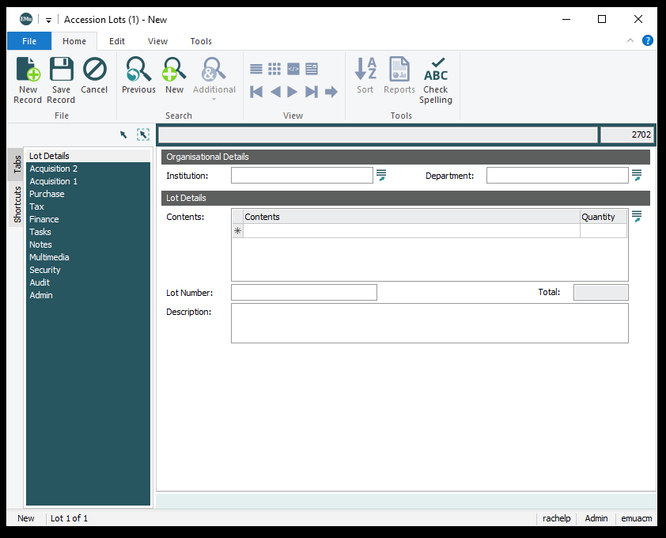
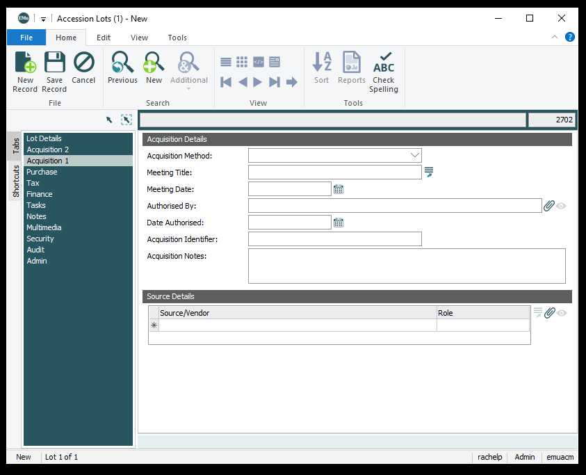
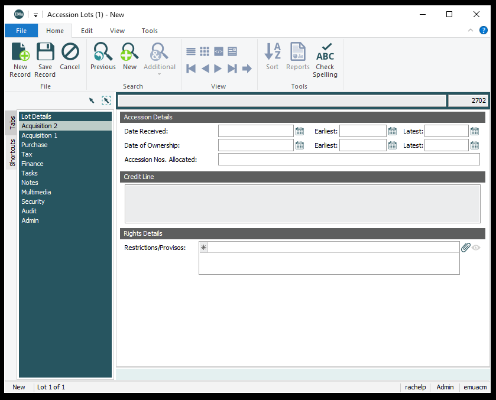

Accession Lots
Lot Details
Accession Lot Number
Accession Lot Number numbers are assigned to all activities related to objects, such as the purchase, donation, exhibition, or deaccession of an object or group of objects. The number represents the activity itself. For group activities, each object in the acquisition, exhibition, or deaccession is assigned the same Accession Lot Number in order to eliminate repetitive data entry. Numbering schemes vary by type of activity.
Order
Accession numbers are assigned chronologically according to the following date rules:
- Purchases less than $25,000
The date the last Amon Carter Museum Staff Acquisition Committee member signs the recommendation for acquisition of the object(s).
- Purchases greater than $25,000
The date the last Amon Carter Museum Member (see acquisitions policy for definition) signs the recommendation for acquisition of the object(s).
- Gifts and Partial Gifts
The date the Amon Carter Museum Director signs the Deed of Gift.
- Bequests
The date stipulated in the Donor’s will or, if not so specified, the date of the Donor’s death.
Institution
The institution that acquired the accession lot. Used to for receiving institution or funder. Amon Carter Museum will be the default for gifts.
- Amon Carter Museum
- Amon G. Carter Foundation
- Jointly Owned ACM/AGCF
- Other
Department
The department that acquired the lot.
- Archives
- Art
- Library
Contents and Quantity
Used to describe the contents of a lot. Use a descriptive term from the list below. These should be described in generic terms. More detailed description in description field. Do not forget to add quantity.
- Album
- Book
- Drawing
- Ephemera
- Frame
- Key
- Negatives
- Painting
- Photograph
- Portfolio
- Prints
- Sculpture
- Studio Backdrop
- Title page and colophon
- Unknown
- Watercolor
Description
More detailed description of lot contents.
Acquisition 1
Acquisition Method
Method by which accession lot was acquired, e.g. auction, sale, donation, etc.
- Bequest
- Commission
- Exchange
- Gift
- Other
- Purchase
- Transfer
- Unrecorded
Meeting Title
Where the approval took place. Default is Board of Trustees meeting.
- Acquisitions committee
- Board of Trustees meeting
Meeting Date
Date of the Collection Committee meeting.
Authorized By
Name of the final signatory on the Acquisition Proposal.
Authorized Date
Date of the final signature on the Acquisition Proposal.
Acquisition Identifier
Internally assigned number or code for acquisitions. NOT USED.
Acquisition Notes
Extra text notes to accompany acquisition details.
Source Details
Party the work was acquired from be it donor or seller.
Source Role
The role that the party played in the acquisition of the accession lot.
Acquisition 2
Date Received
Date the artwork arrived on site (or date object left the owner’s custody if arrival on site occurs after the year end and donor established intent to gift the former year).
Date of Ownership
Date specified on the Deed of Gift signature line for the museum, or the date of final invoice approval for purchases.
Accession Nos Allocated
Internally assigned numbers for the accession lot. List of all accession numbers included.
Credit Line
The default credit line is as follows:
Amon Carter Museum, Fort Worth, Texas
Special Credit Lines
Special credit lines should be determined at the time of accession. Use the following rules when composing special credit lines. The rare exception to these guidelines may be made to accommodate special donor or purchase agreements (e.g. Thomas Eakins' Swimming), but most will conform to the following:
Organize the components in this order:
Amon Carter Museum, Fort Worth, Texas, [Special means of acquisition, (gift, bequest, funded purchase)]
- Separate each part of the credit line with a comma, not a period. Do not place a period at the end of the credit line.
- Capitalize the first word of each section of the credit line (preceded by a comma). Do not capitalize prominent words such as memory, honor, memorial, or recognition when they fall mid-phrase.
- Only include City and State when specifically requested by donor. If City and State are used, do not abbreviate; spell the words out completely.
- Special means of acquisition is listed with the principal act in noun form, e.g. “Gift of,” “Bequest of,” “Purchase with funds from,” etc.
- If the acquisition was partially funded by an endowment or special named fund, the proper credit line terminology is “…, Purchase with assistance from the endowment/special fund” or “…, Gift of party name with assistance from the endowment/special fund”.
- If the acquisition was partially funded by an endowment or special named fund related to the Carter such as the Paper Forum, do not repeat the Amon Carter Museum of American Art a second time. "Amon Carter Museum of American Art, Fort Worth, Texas, Purchase with funds provided by the Paper Forum"
- The credit line for a single anonymous donor should read, “Amon Carter Museum, Fort Worth, Texas, Anonymous gift”
- If an estate has been registered as a specific legal entity, use the designated legal name, including the word “The,” if necessary.
- For purposes of the credit line, refer to all photographers as “artist,” i.e. “Gift of the artist,” “Bequest of the artist.”
Amon Carter Museum, Fort Worth, Texas, Amon G. Carter, Jr. Memorial Fund purchase
Amon Carter Museum, Fort Worth, Texas, Purchase with assistance from the Ruth Carter Stevenson Fund
Amon Carter Museum, Fort Worth, Texas, Transferred to the Amon Carter Museum through a purchase agreement with the Modern Art Museum of Fort Worth
Amon Carter Museum, Fort Worth, Texas, Purchase with funds provided by the Council of the Amon Carter Museum
Amon Carter Museum, Fort Worth, Texas, Copyright Trustees of the Ansel Adams Publishing Rights Trust
Amon Carter Museum, Fort Worth, Texas
Amon Carter Museum, Fort Worth, Texas, Gift of Kurt and Paulette Olden, New York
Amon Carter Museum, Fort Worth, Texas, Gift of The Estate of Nell Dorr
Amon Carter Museum, Fort Worth, Texas, Bequest of the artist
Amon Carter Museum, Fort Worth, Texas, Anonymous gift
Amon Carter Museum of American Art and the Estate of Ruth Asawa, Courtesy David Zwirner Gallery
Objects
Displays catalogue records attached to lot.
Multimedia
As we continue to update EMu, we are adding more important documents for easy access. Accession lots Multimedia tab is only accessible to Curatorial, Registrar and Conservation groups. New lots should have scans of the following:
- Acquisition Proposal
- Deed of Gift
- Other potential notes or supporting documentation
Tabs not currently used or described:
- Purchase
- Tax
- Finance
- Tasks
- Notes
- Security
- Audit
- Admin